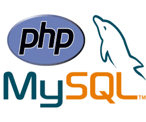

PHP, a server-side scripting programming language, has managed a glorious journey since its inception in 1994. Little did the programmers knew, when Rasmus Lerdorf developed PHP, his creation would one day find a place as one of the top five programming languages. Now, managed by an elite group of programmers (known as the PHP Group), PHP has emerged from version 1.0 to 5.6 (version 6 has been abandoned, and 7.1 is about to be released this November). In terms of “Top Programming Languages Used in Popular Websites,” PHP has a number of feathers in its cap, namely: Wikipedia, FaceBook, Yahoo, Tumblr, and WordPress. According to RedMonk research study, PHP is the 3rd most-used programming language in the world. It is also the most “beginner-friendly” programming language to learn, and one of the top ten languages to learn in 2016. There are a number of erudite PHP programmers who have been continuously contributing to the development of PHP programming. Today we are going to discuss websites where you can find great resources for PHP. PHP (PHP recursive acronym: Hypertext Preprocessor) is a popular open source language especially suitable for web development and that can be embedded in HTML